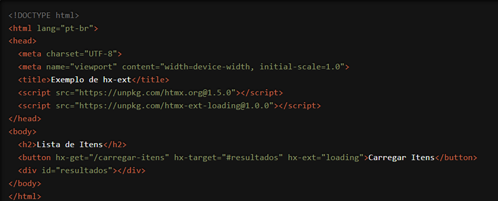

Estamos entusiasmados em apresentar uma funcionalidade incrivelmente versátil e poderosa do HTMX que permite estender e personalizar suas interações com o servidor: o atributo `hx-ext`. Com `hx-ext`, você pode integrar extensões que adicionam funcionalidades avançadas às suas requisições HTTP de forma simples e eficaz. Vamos explorar como essa funcionalidade pode transformar suas aplicações web.
O que é o atributo `hx-ext`?
O `hx-ext` é um atributo do HTMX que permite adicionar extensões às suas requisições HTTP. As
extensões são pequenos pedaços de código que podem modificar ou ampliar o comportamento
padrão das requisições HTMX. Isso pode incluir funcionalidades como animações, manipulação
avançada de dados e muito mais. O `hx-ext` torna a integração dessas extensões direta e sem
complicações.
Como Funciona?
Vamos ver um exemplo prático para entender melhor como o `hx-ext` pode ser usado. Suponha que
você queira usar uma extensão que adiciona animação de carregamento enquanto uma requisição
está em andamento:

Neste exemplo, estamos usando uma extensão fictícia chamada `htmx-ext-loading` que adiciona uma animação de carregamento enquanto a requisição HTTP GET para "/carregar-itens" está em andamento. A extensão é incluída através do atributo `hx-ext="loading"`, garantindo que a animação seja exibida durante o carregamento e removida quando a requisição for concluída.